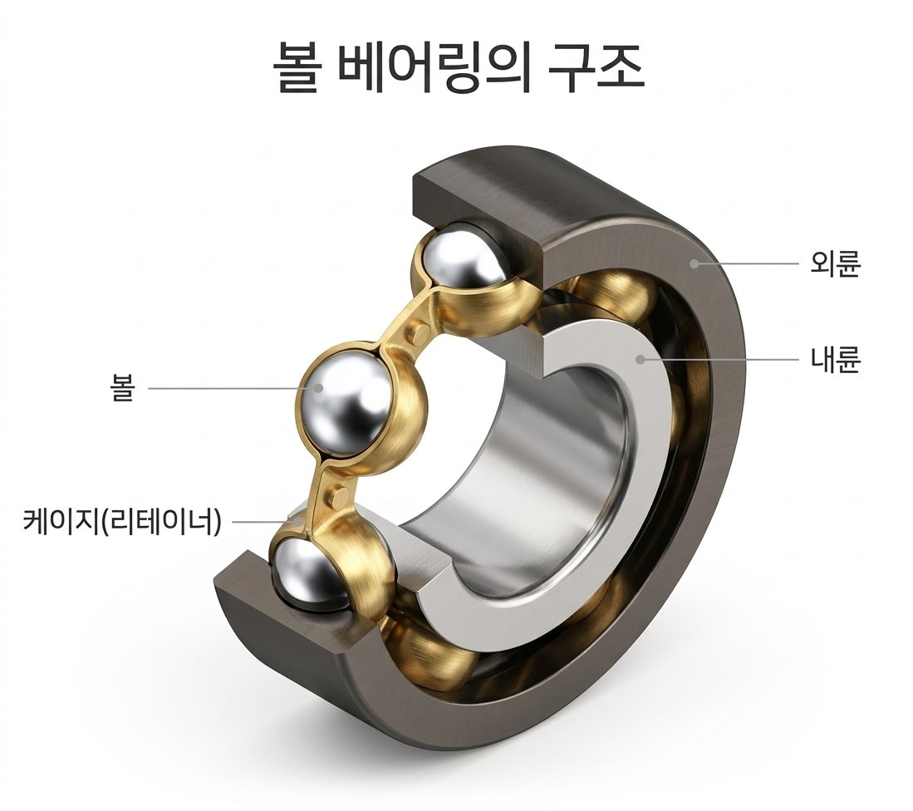
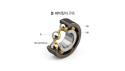
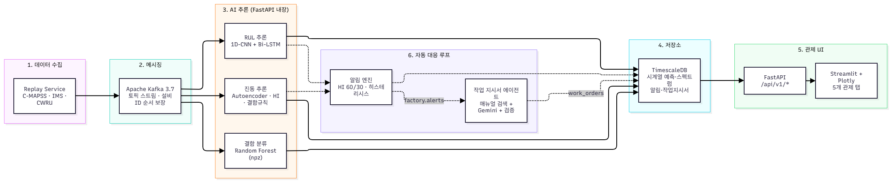
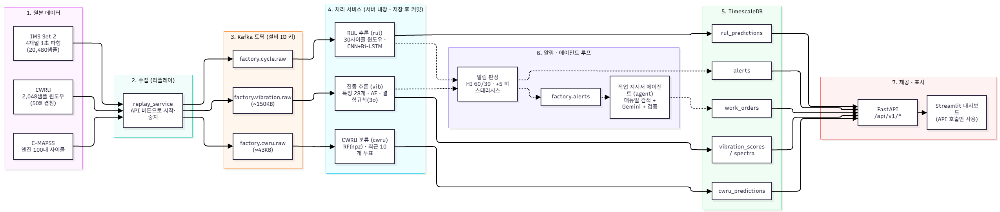
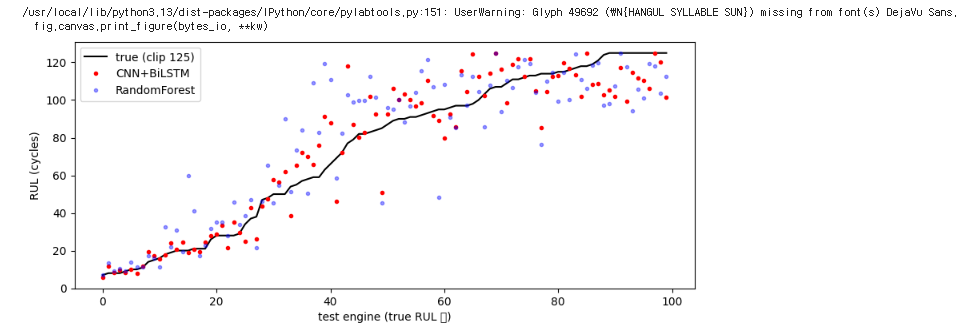
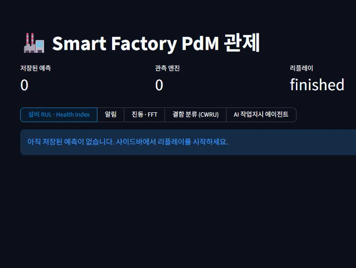

SMART FACTORY PDM ARCHITECTURE
진동·센서 스트림 기반 예지보전(PdM) 관제 시스템
Kafka · TimescaleDB · 딥러닝 RUL · LLM 에이전트 연동 End-to-End 시스템 파이프라인
발표자: 김지선 | 2026. 11. 24 |
SMART FACTORY PDM SYSTEM
[서론 1단계] 예기치 않은 다운타임 손실과 예지보전 전환 당위성
🚨 다운타임 시간당 수천만 ~ 수억 원 직간접 손실 (EPRI / NIH 연구 통계)
제조 현장의 핵심 과제는 단순 유지보수비 절감이 아닌 '예기치 않은 동반 정지(Unplanned Downtime)' 예방입니다. 설비 가동 중단 시
라인 재가동 비용 및 품질 결함 손실이 기하급수적으로 증가합니다.
1. 사후정비 (Run-to-Failure)
• 고장 발생 후 즉시 수리 진행• 비계획 라인 정지• 부품 파손 연쇄 확산 및 수리비 극대화
2. 예방정비 (Time-based)
• 정해진 주기(월/년)마다 부품 교체• 잔여 수명이 남은 부품의 과다 교체• 정비 작업 자체로 인한 라인 정지 발생
3. 예지정비 (Predictive) √
• 센서 스트림 실시간 상태 관제• 이상 징후 포착 및 잔여수명(RUL) 예측• 최적 시점에만 정비 수행 (비용 최소화)


SMART FACTORY PDM SYSTEM
[서론 2단계] 회전기기 및 '베어링' 결함 진단의 당위성
⚙️ 공장 동력원의 다수를 차지하는 회전기기
모터, 펌프, 컴프레서, 팬 등 회전 기기는 모든 스마트 팩토리 공정의 핵심 동력 전달 장치
📊 모터 고장 원인의 40~50% = 베어링 결함
IEEE & EPRI 공인 통계에 따르면 모터 고장의 가장 압도적인 원인은 핵심 소모품인 '베어링(Bearing)' 결함
🎯 왜 하필 '베어링(Bearing)'인가?
1. 핵심 소모품의 취약성: 고속 회전과 전단 하중을 직접 받으므로 내륜, 외륜, 볼 소자의 열화가 가장 빠르게 진행
2. 진동 신호 특성의 뚜렷함: 결함 발생 시 고유 결함 주파수(BPFO, BPFI, BSF) 충격 파형이 명확하게 나타나 DSP 특징 추출에 최적
3. 조기 징후 감지 가치: 파손 전 미세 진동 변화를 포착하여 정비 리드타임 사전 확보 가능
4. 본 프로젝트 진단 타겟: CWRU 및 NASA IMS 베어링 데이터셋을 핵심 검증 대상으로 설정한 명확한 당위성 제공
SMART FACTORY PDM SYSTEM
[서론 3단계] 시스템적 위치: ISA-95 피라미드 내 PdM 관제 아키텍처 포지셔닝
Level 3 · MES / ERP
생산 계획 및 기업 자원 관리 계층 (경영/생산 모니터링)
★ PdM 관제탑 (본 프로젝트)
Level 2 데이터를 API/Kafka로 비침습 컨슈밍 → AI 추론 & 실시간 관제
Level 2 · 공장 시계열 DB (Historian)
PLC/SCADA 수집 센서 데이터 실시간 저장 및 쿼리 제공 계층
Level 0~1 · SCADA / PLC / 센서
현장 실시간 물리 제어 및 진동·온도 데이터 수집 (High Criticality)
💡 현장 실무 맞춤형 아키텍처 차별점
1. 비침습적(Non-intrusive) 연동
현장 제어인 PLC/SCADA(Level 0~1)를 직접 건드리지 않고, 이미 저장된 Level 2 DB 스트림을 비동기 수집하여 공장 가동 안정성 확보
2. 메시지 브로커(Kafka) 버퍼링
초당 수천 건의 고주파 신호 유입 시에도 메시지 큐 순서 보장 및 부하 분산 처리
3. 원격 관제탑(Control Tower)
독립된 AI 추론 인프라 및 Streamlit 대시보드 구축으로 기존 OT 계층 영향 제로화
SMART FACTORY PDM SYSTEM
[서론 4단계] 3종 벤치마크 데이터셋 1:1 매칭 및 시너지
• 데이터: 12kHz 진동 신호• 대상: 정상, 내륜, 외륜, 볼 결함• 목적: 베어링 결함 유형 분류• 핵심 분석: FFT & 엔벨로프 기반 주파수 특징 추출 (MCSA 연동)
• 데이터: 20kHz 고주파, 164시간 연속• 대상: 4개 베어링 전 수명 열화• 목적: 조기 징후 이상 감지• 핵심 분석: Autoencoder 기반 Health Index 추적 및 리드타임 확보
• 데이터: 터보팬 엔진 100대 센서 21종• 대상: 다중 센서 시계열 사이클• 목적: 잔여수명(RUL) 회귀 예측• 핵심 분석: 1D-CNN + Bi-LSTM 기반 시계열 RUL 추론 파이프라인
CWRU 베어링 데이터셋
NASA IMS 데이터셋
NASA C-MAPSS 데이터셋

[시스템 아키텍처 – 전체 시스템 구성]
SMART FACTORY PDM SYSTEM

[데이터 파이프라인 – 데이터의 전체 흐름]
SMART FACTORY PDM SYSTEM

SMART FACTORY PDM SYSTEM
[본론 1] 분석·모델링: 알고리즘 검증 및 5개 핵심 기능 성능
기능
사용한 방식 (Algorithm / Pipeline)
데이터
검증 결과
특징 추출
Hanning FFT, Hilbert 엔벨로프, 결함 주파수(BPFO·BPFI·BSF) 피크, 시간 영역 지표 (SciPy), 특징 28개
CWRU, IMS
베어링 결함 분류
Random Forest
(0HP 학습 후 3HP 테스트, 파일별 최근 10개 윈도우 투표)
CWRU
이상 감지 / Health Index
정상 구간 25% 학습 Autoencoder (PCA·마할라노비스 비교),
점수→임계값 비율 0~100 변환, 5개 중앙값 평활
IMS Set 2
고장 약 74시간 전 경보 확보
잔여수명 (RUL) 예측
1D-CNN + Bi-LSTM (30사이클 윈도우, RUL 125 클리핑, 엔진 단위 검증 분할)
C-MAPSS FD001
의심 결함 판정
규칙 기반: 결함 주파수 피크의 정상 대비 z-점수 비교
(3σ 이상, 1-2위 차 1.5σ 이상)
IMS
베어링 1을 외륜(BPFO) 결함으로 정밀 판정
정확도 1.00 (827개 윈도우, 쉬운 벤치마크)
RMSE 12.98
(Random Forest17.86 대비 우수),
서비스 12.51
엔벨로프로 결함 주파수 명확 포착
SMART FACTORY PDM SYSTEM
[본론 2] 서비스·인프라: 실시간 스트리밍 파이프라인 & 검증 일치성
⚡ 실시간 파이프라인 & 데이터 리플레이
• Docker (Kafka 3.7, TimescaleDB), FastAPI lifespan, aiokafka, asyncpg• 엔진·베어링 ID를 메시지 키로 사용하여 순서 보장, DB 저장 성공 후 오프셋 커밋• 데이터 리플레이: C-MAPSS(100대 동시), IMS(1초 파형 4채널),
CWRU(2048샘플 윈도우) 전송
🎯 추론 서비스 & Colab 검증 일치성 (Precision Match)
• RUL 추론 서비스: 엔진별 30사이클 슬라이딩 윈도우 + 학습 동일 정규화 적용• 진동 추론 서비스: numpy Autoencoder 추론 (Colab 점수와 같은 수준)• CWRU 분류 서비스: 트리를 npz 배열 내보내 numpy 추론 (scikit-learn 확률 완전 일치)
🔔 알림 엔진 & 히스테리시스 (Alert Engine)
• 임계값 기준: Health Index 60 미만 '주의', 30 미만 '긴급' 발령• 히스테리시스: 단계가 올라갈 때만 기록하며, +5 히스테리시스로
알림 플리커링 방지• 알림 결과는 TimescaleDB 및 Kafka 토픽으로 동시에 즉시 전송
📋 작업 지시서 에이전트 인프라 개요
• 정비 매뉴얼 자동 파싱 → 규칙 기반 SOP 선택 연동• 임베딩 검색: gemini-embedding-001 + numpy 캐시 검색• LLM 요약: Gemini 3.5 Flash-lite 기반 요약 및 우선 조치 선택
(실패 시 템플릿 대체)
SMART FACTORY PDM SYSTEM
[본론 3] LLM 작업 지시서 에이전트: 매뉴얼 파싱부터 Gemini 요약까지 파이프라인
1단계: 매뉴얼 파싱
• 정비 지침 매뉴얼 텍스트 파싱• 규칙 기반 SOP 데이터베이스 구축 및 구조화
2단계: 임베딩 검색
& 캐싱
• 모호한 조치 시 numpy 및 gemini-embedding-001 검색• 속도 및 비용 최적화를 위한 캐시 구조 적용
3단계: Gemini LLM 연동
• Gemini (gemini-3.5-flash-lite)가 정비 조치 요약• 현장 정비 사용 우선 조치 선택 알고리즘 수행
4단계: 규칙 검증 & 백업
• 규칙 검증 실패 시 기본 템플릿 대체• 시한·SOP·조치는 반드시 매뉴얼 원문 근거 표출

SMART FACTORY PDM SYSTEM
[본론 4] 화면·운영: Streamlit 관제 대시보드 탭 구성
📑 대시보드 5개 핵심 탭 상세 구성
1. RUL · Health Index : 엔진 및 베어링별 실시간 RUL 현황 및 건전성 지수 추이 그래프
2. 알림 : 단계별 알림 이력 조회 및 현장 직원 확인(Acknowledge) 처리
3. 진동 ∙ FFT : HI 추이, 엔벨로프 스펙트럼, 스펙트로그램, 결함 주파수 표시선, 의심 결함
4. 결함 분류 (CWRU) : 실시간 CWRU 베어링 결함 분류 결과 및 최근 10개 윈도우 투표 결과
5. AI 작업 에이전트: Gemini AI 에이전트가 생성한 추천 SOP 및 정비 지침 모듈
SMART FACTORY PDM SYSTEM
[본론 5] 실시간 스트림 파이프라인 검증 성과 및 수치 검증
10,196 건
TimescaleDB 저장 데이터(전송 13,096건 중 윈도우 수집 후 정밀 저장)
100 대
관측 터보팬 엔진 수(엔진 100대 동시 실시간 스트림 관제 완료)
긴급 29 / 주의 60
단계별 알림 발령 건수(알림 이벤트 감지 및 대시보드 실시간 연동)
+5 히스테리시스
알림 플리커링 방지(상태 전환 및 복귀 임계값 이원화 정밀 적용)
📌 실시간 파이프라인 검증 시사점
• 전처리 파이프라인 일치성: 전체 전송 건수 13,096건 중 초기 29사이클 슬라이딩 윈도우 형성 기간을 제외한 10,196건이 오차 없이 TimescaleDB에 정상 수집
• 알림 플리커링 완벽 방지: 임계값 경계 부근에서 진동 신호 미세 동요 시 알림이 켜짐/꺼짐을 반복하는 플리커링 현상을 +5 히스테리시스 구간 설정으로 완벽 차단
• 오프라인 AI 검증-온라인 서비스 100% 일치: Colab에서 검증한 Autoencoder 및 Random Forest 모델 추론 결과가 FastAPI 실시간 서비스 상에서 소수점 이하까지 동일하게 구현됨을 확인
SMART FACTORY PDM SYSTEM
[결론 1] 시스템 한계 분석: 5가지 한계점
1. IMS 고장 케이스 단일성 한계
IMS 데이터셋은 고장 케이스가 1건으로 실제 케이스를 대변하기에 한계 / 베어링 2~4의 판정은 같은 축에 있어서 전달된 주파수의 결함을 추정할 뿐
/ 데이터 셋의 마지막 두 파일은 회전 정지로 추정됨
2. CWRU 벤치마크 난이도
CWRU 결함 분류 정확도 1.00 결과는 비교적 결함 특성이 명확한 '쉬운 벤치마크' 데이터셋 기반의 검증 결과
3. 의심 결함 규칙 판정 제약
의심 결함 판정 규칙의 내륜 및 볼 결함 판정은 실제 고장 데이터가 아닌 합성 신호(Synthetic Signal)로만 시험 및 검증되었습니다.
4. 정비 매뉴얼 데모 목적 제약
LLM 에이전트에 적용된 작업 지시서 및 정비 매뉴얼은 기술 검증용 데모 데이터이며, 실제 현장의 공인 정비 지침을 대체할 수 없습니다.
5. RUL 단위 및 성능 미측정
잔여수명(RUL) 예측의 단위는 물리 시간이 아닌 '사이클' 기준이며, 본 검증 단계에서 실시간 처리량(Throughput) 및 네트워크 지연시간은 측정하지 않았습니다.
SMART FACTORY PDM SYSTEM
[결론 2] 향후 과제: 시스템 고도화 및 확장 로드맵 (Future Work)
🎨 2-D 시각화 & 진동 서비스화
• 2D 베어링 단면도 모니터링 모듈 구축 및 회전 정지 상태 직관적 표시• DSP 워커 전용 개발 및 1D-CNN 원신호 기반 베어링 결함 분류 서비스 확장
📲 외부 알림 채널 & CMMS 연동
• 모바일 봇 연동: 카카오톡 및 Slack 모바일 긴급 알림 메신저 채널 구축• 공장 보전 연동: CMMS(설비보전관리시스템) 자산 연동 및 관리자 항목 권한 세분화
🤖 LangGraph 대화형 AI Agent
• LangGraph 워크플로우 연동으로 정비사 대상 복합 대화형 질의응답 기능 개발• 매뉴얼 RAG 기반 과거 정비 이력 및 최적 수리 절차 대화형 챗봇 구축
📊 Weibull 신뢰구간 & 다중 운전조건
• Weibull 신뢰구간 모델링, 파이프라인 실시간 처리량·지연시간 정밀 측정• FTF(케이지 결함) 판정 추가 및 복합 운전조건(NASA C-MAPSS FD002~FD004) 확장